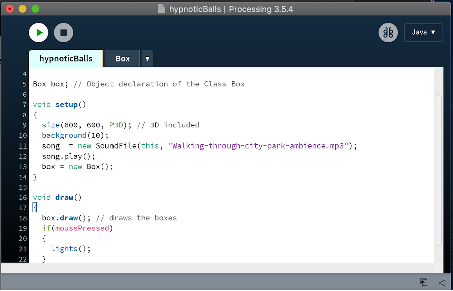
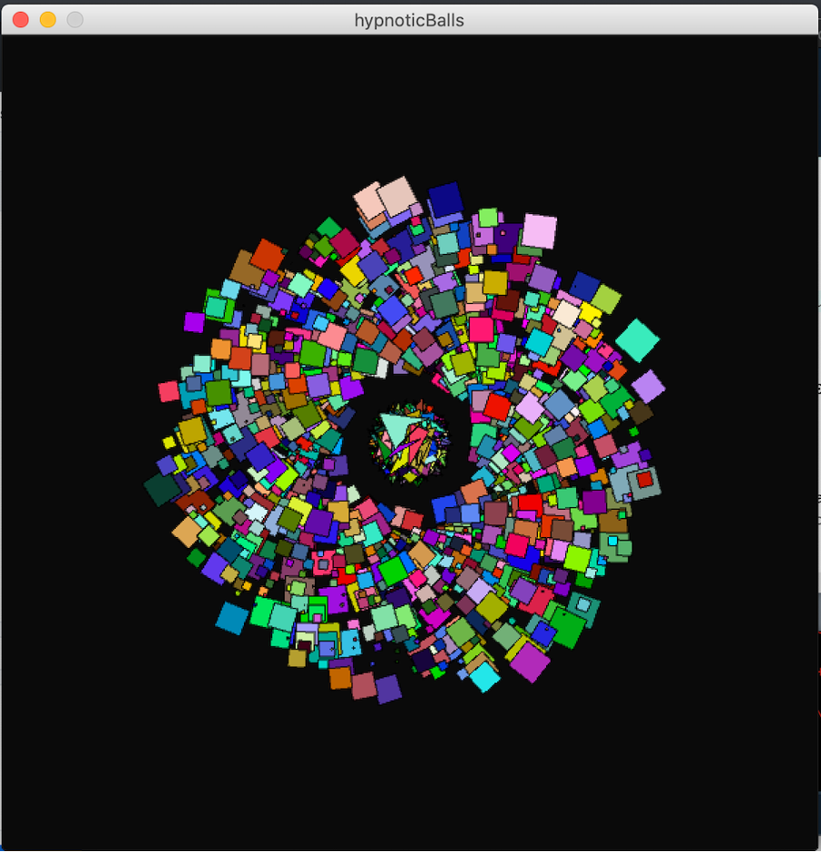
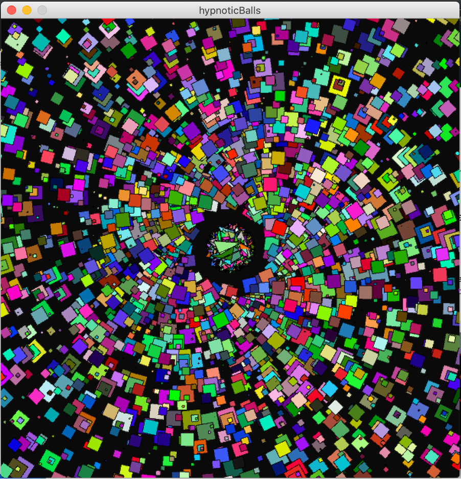

Bridget KalindaI am a student of Computer Science at City. This was my first programming experience and i have enjoyed learning and using processing to make and manipulate data to give you desired results. I enjoy Travelling, Reading and Cycling. Check out the code on Github: https://github.com/bridgetkalinda/adbz754 |
||
|
|
||
Bootcamp: Hypnotic Spiral BoxesThis project shows a 3D spiral of randomised boxes and colour with sound from the Amazon Forest in Australia. It shows an understanding of If statements, classes, 3D, sound and randomness. The spiral creates an impression of the actual hypnotic tool used by doctors to hypnotise their patients. This project was inspired by David Attenborough: "I've certainly spent more time in my garden listening to birds, than I have for a very long time. A lot of people have been surprised by that - a lot of people have suddenly realised what deep, profound joy can come from witnessing the rest of the world - the natural world." |
||
|    | ||
2D Java Game: Owl Breakout GameThis project shows a 2D game developed on the physics engine. The main two challenges for this project were being able to get different sounds on the 5 levels of this game. My mistake was in my Game class, next to where the game world was made, I added sound and this was blocking the sounds that created on different levels. The other challenge was the load method in my GameSaveLoader class. Each time I loaded the game, more bodies in my world were getting double or trippled. After several attempts, with the help of Charles (one of the TAs) he showed me my mistake and I made a for loop that drops the bodies of the current world and to add a new one one each time I get to a new level. My take from this is to always work on time (not leave everthing to last minute) and my debugging skills improved alot. |
||